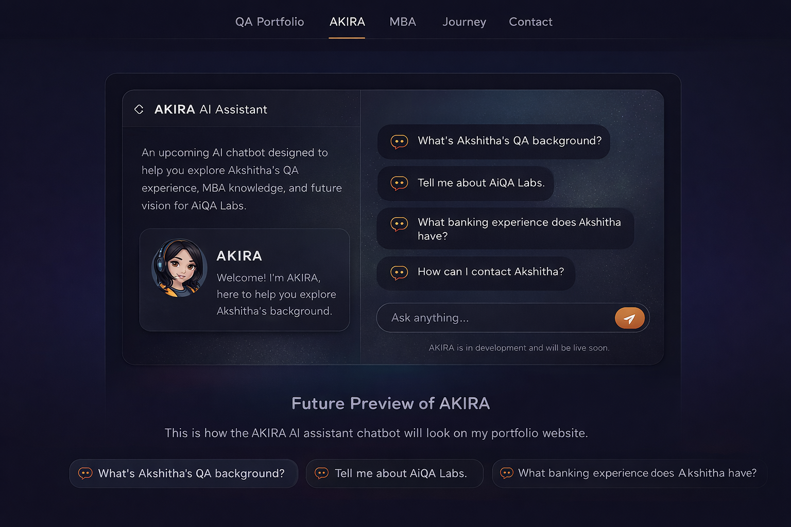

About Me
I am a Software QA Engineer with experience in banking and enterprise systems. I am also completing my MBA and building my long-term vision around AI-powered software testing and digital quality services.
Professional Focus
Manual testing, system integration testing, defect reporting, test evidence preparation, and release support.
Learning Path
ISTQB Foundation, AI testing concepts, automation exposure, and strategic leadership through MBA studies.
Future Goal
To build AiQA Labs into a trusted AI-powered QA and testing consultancy that creates measurable client value.
Automation Testing Projects
Google Search Test
Automated Google search practice using Playwright with Python.
View Project on GitHubProfessional CV
You can preview my latest professional CV below or download the full version.
Skills
A simple summary of the skills and tools I use or am actively developing.
QA Portfolio
A selection of sample QA artifacts, portfolio documents, and practical templates that reflect my testing approach, documentation standards, and quality assurance workflow.
Test Case Template
Structured manual test case template covering scenarios, preconditions, test data, expected results, and execution status.
Download Test Case TemplateBug Report Template
Professional defect report template including severity, priority, environment, expected result, and actual result.
Download Bug Report TemplateSIT Testing Checklist
A structured checklist used during System Integration Testing to validate dependencies, workflows, and execution readiness.
Download SIT ChecklistTest Plan Template
A sample QA test plan showing scope, objectives, test strategy, environment, risks, and deliverables.
Download Test Plan TemplateAKIRA AI Assistant
AKIRA is my upcoming AI-powered portfolio assistant. In the future, visitors will be able to chat with AKIRA to learn about my QA experience, banking domain knowledge, MBA journey, and the vision behind AiQA Labs.

Future preview of the AKIRA AI assistant interface that will guide visitors through my portfolio and professional journey.
What AKIRA Will Do
AKIRA will answer questions about my professional experience, QA portfolio, banking systems knowledge, and MBA research.
Future Vision
AKIRA will eventually evolve into a real AI assistant that helps visitors explore my work and understand how AI can improve software quality and testing processes.
🤖 Chat with AKIRA
MBA Research & Strategy Work
Selected academic work covering strategic management, leadership, business analysis, and market evaluation.
Strategic Management Assignment
Analysis covering competitive strategy, market environment, and business growth frameworks.
Add MBA PDF laterLeadership & Decision-Making Study
Academic work exploring leadership styles, strategic thinking, and decision-making in business contexts.
Add MBA PDF laterMy Journey
Audit & Financial Assurance
2012 — 2014
Started my professional journey in the audit field, gaining around two years of experience in financial auditing, compliance reviews, documentation verification, and analytical financial analysis. This experience built a strong foundation in attention to detail, controls, and process discipline.
Retail & Corporate Banking Operations
2014 — 2024
Worked for about ten years in retail and corporate banking operations. During this time I developed deep knowledge of banking workflows, financial systems, risk awareness, customer operations, and enterprise financial processes.
Software Quality Assurance in Banking Technology
2024 — Present
Leveraging my banking domain expertise, I transitioned into Software Quality Assurance within the banking technology domain. My focus includes manual testing, system integration testing (SIT), defect reporting, validation of financial transactions, and ensuring high-quality banking software systems.
Contact
Feel free to connect with me for QA opportunities, collaborations, or professional networking.